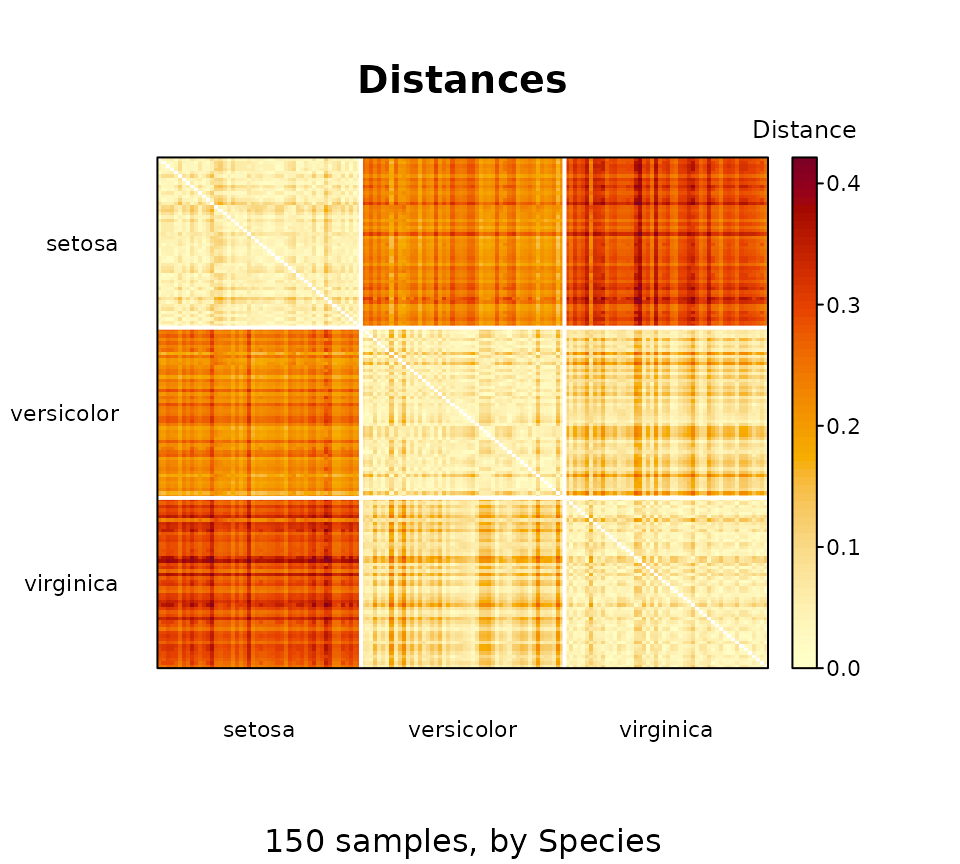
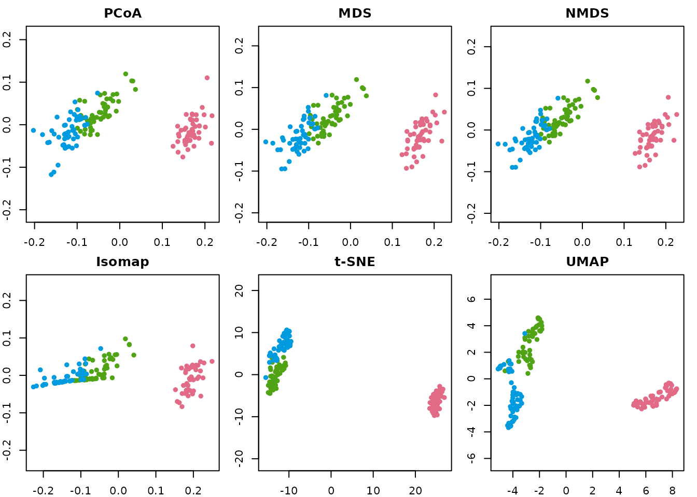
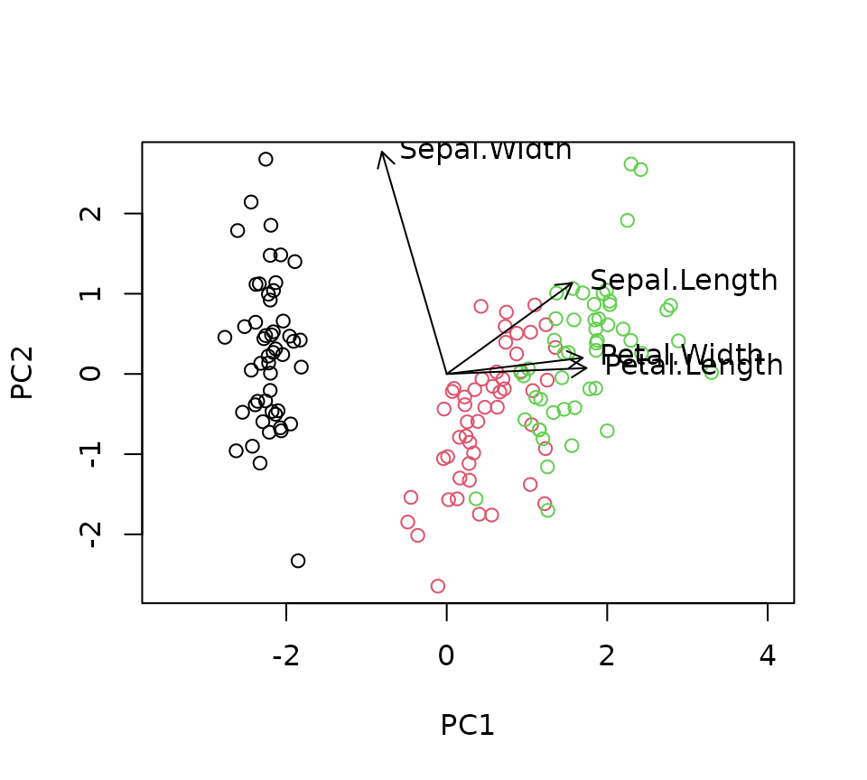
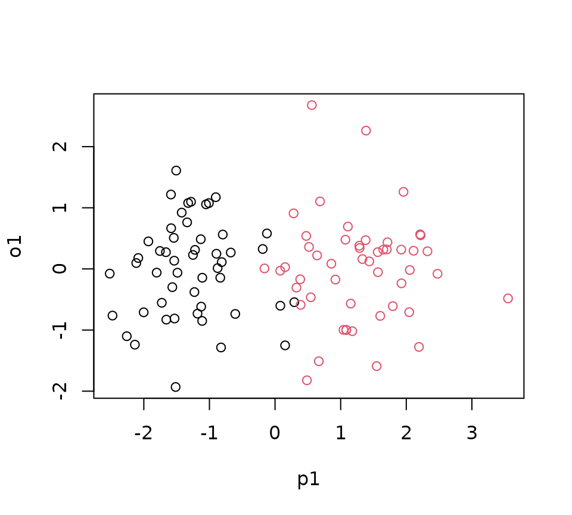
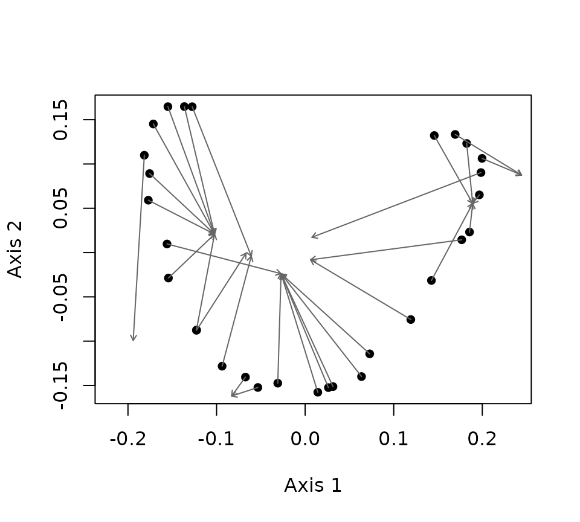
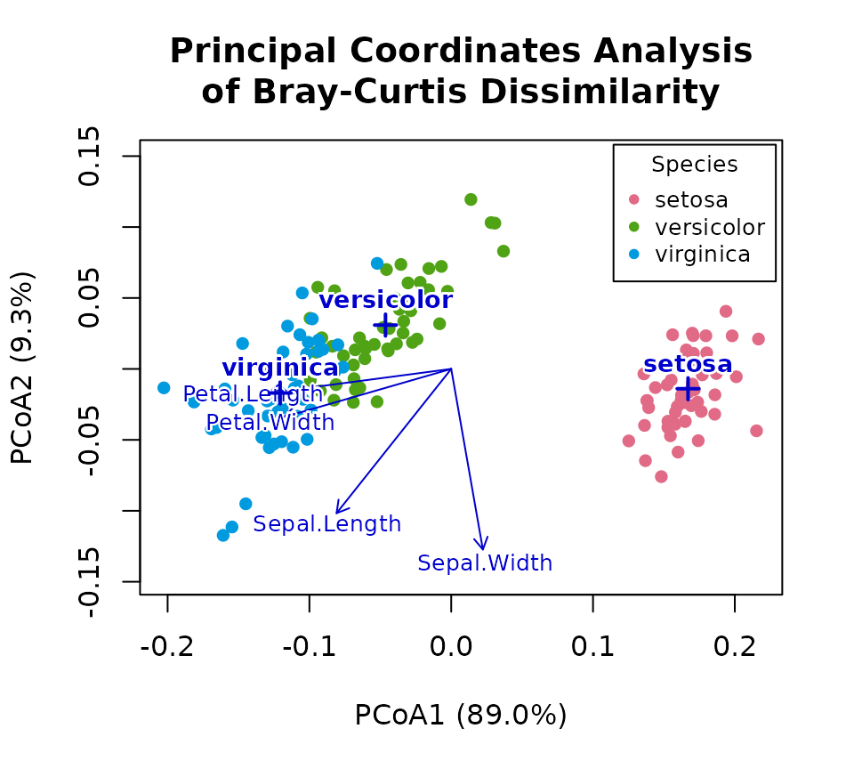

Introduction
An ordination places samples on a few axes so that similar samples land near each other, ready to plot. ecodive has eleven ordination methods, and two functions that show which features or variables drive the axes. All of them are written in parallel C and give the same results as the R and Python packages they replace, for any number of threads.
Most methods ordinate a distance matrix, which you compute first with any beta diversity metric. Three methods, PCA, robust Aitchison PCA and redundancy analysis, start from the count table itself.
bray(), beta_div(), ...
count table ────────────────────────► dm ──► dist_ord(dm, 'pcoa')
│ pcoa(dm), nmds(dm), umap(dm), ...
│ dist_test(dm, 'permanova', ...)
│
└─────────────────────────────────────────► count_ord(counts, 'pca')
pca(counts), rpca(counts)The examples here use R’s built-in iris data: 150
flowers (the samples), four measurements of each (the features), and
three species. Your own data can be any count table that ecodive takes,
such as a matrix, a sparse matrix, or a phyloseq or
rbiom object.
library(ecodive)
head(iris)
#> Sepal.Length Sepal.Width Petal.Length Petal.Width Species
#> 1 5.1 3.5 1.4 0.2 setosa
#> 2 4.9 3.0 1.4 0.2 setosa
#> 3 4.7 3.2 1.3 0.2 setosa
#> 4 4.6 3.1 1.5 0.2 setosa
#> 5 5.0 3.6 1.4 0.2 setosa
#> 6 5.4 3.9 1.7 0.4 setosa
dm <- bray(iris[, 1:4])plot() draws the distances as a heatmap, with the
samples clustered (by average linkage) so that similar ones sit
together. Sorted by species, the three species show as blocks of short
distances along the diagonal, and setosa stands far from the other two:
the structure that an ordination lays out on a few axes. To cluster the
samples of the matrix itself, give the distance function
clust, such as
bray(counts, clust = 'average').
plot(dm, 'Species', iris)
Choosing a method
| Function | Method | Input | Best for |
|---|---|---|---|
pcoa() |
Principal Coordinates Analysis (PCoA) | dm |
The default: exact, fast, and reports the variance on each axis. |
mds() |
Metric Multidimensional Scaling | dm |
Fitting the distances themselves in exactly
n_axes dimensions. |
nmds() |
Non-metric Multidimensional Scaling (NMDS) | dm |
Keeping the rank order of distances; popular with Bray-Curtis. |
isomap() |
Isometric Feature Mapping (Isomap) | dm |
Long gradients that PCoA bends into an arch. |
tsne() |
t-distributed Stochastic Neighbor Embedding | dm |
Separating clusters; distances between clusters mean little. |
umap() |
Uniform Manifold Approximation and Projection | dm |
Clusters, with more of the global layout kept than t-SNE. |
dbrda() |
Distance-based Redundancy Analysis (db-RDA) | dm |
Axes that sample metadata explain (a constrained ordination). |
capscale() |
Constrained Analysis of Principal Coordinates | dm |
The same, as vegan::capscale() computes
it. |
capda() |
Discriminant CAP (Anderson & Willis) | dm |
Axes that best separate known groups, from any distances (supervised). |
rda() |
Redundancy Analysis (RDA) | counts | Axes of (transformed) counts that sample metadata explain. |
cca() |
Canonical Correspondence Analysis (CCA) | counts | The same in the chi-square metric, for species with unimodal responses. |
pca() |
Principal Component Analysis (PCA) | counts | Euclidean geometry of (transformed) counts, with feature loadings. |
ca() |
Correspondence Analysis (CA) | counts | The chi-square geometry of species profiles, for unimodal responses. |
rpca() |
Robust Aitchison PCA | counts | Sparse compositional data, such as microbiome counts. |
dpcoa() |
Double Principal Coordinate Analysis (DPCoA) | counts | Samples and taxa together, in a space shaped by the phylogeny. |
lda() |
Linear Discriminant Analysis (LDA) | counts | Axes that best separate known groups, from a few features (supervised). |
plsda() |
Partial Least Squares Discriminant Analysis | counts | Axes that best separate known groups (a supervised ordination). |
oplsda() |
Orthogonal PLS Discriminant Analysis (OPLS-DA) | counts | One axis that separates two groups, and others for the rest (supervised). |
list_dist_ords() lists the methods that take distances,
with the other names each one answers to.
The result
Every method returns the same kind of object: a matrix with one row
per sample and one column per axis, so it goes straight into
plot() or a data frame.
ord <- pcoa(dm)
head(ord)
#> PCoA1 PCoA2 PCoA3
#> [1,] 0.1692812 -0.02591990 -0.005053611
#> [2,] 0.1706354 0.02346821 0.030848760
#> [3,] 0.1870090 -0.00320247 0.032221661
#> [4,] 0.1801593 0.01132449 0.037211653
#> [5,] 0.1763516 -0.02998591 -0.006128668
#> [6,] 0.1363264 -0.03979963 -0.043074846Its attributes say how the ordination was made and how good it is.
They always begin with method, eig (the
eigenvalues), and prop (the proportion of variance on each
axis), followed by the method’s own.
str(ord)
#> 'ecodive_ord' num [1:150, 1:3] 0.169 0.171 0.187 0.18 0.176 ...
#> - attr(*, "dimnames")=List of 2
#> ..$ : NULL
#> ..$ : chr [1:3] "PCoA1" "PCoA2" "PCoA3"
#> - attr(*, "method")= chr "pcoa"
#> - attr(*, "eig")= num [1:3] 2.3473 0.2459 0.0766
#> - attr(*, "prop")= num [1:3] 0.8901 0.0932 0.0291
#> - attr(*, "trace")= num 2.64
#> - attr(*, "correction")= chr "none"
#> - attr(*, "constant")= num 0
#> - attr(*, "display")=List of 1
#> ..$ title: chr "Principal Coordinates Analysis of Bray-Curtis Dissimilarity"plot() draws the first two axes, and takes its labels
from the attributes: the title from method, and each axis’s
share of the variance from prop. Give groups
(and data) as for the tests to colour the samples, with a
legend. The axes share one scale (asp = 1), to keep
distances true.
plot(ord, 'Species', iris)
Any argument of plot(), such as main,
xlim or cex, replaces the default, and
axes = c(1, 3) plots other axes. See
?plot.ecodive_ord.
Running methods by name
dist_ord() runs any distance-based method by name, as
beta_div() does for beta diversity metrics. Each method
keeps its own arguments and defaults, and seed is accepted
(and ignored) by the methods that have no random parts, so one call can
run them all.
ords <- list(
'PCoA' = dist_ord(dm, 'pcoa'),
'MDS' = dist_ord(dm, 'mds', seed = 1),
'NMDS' = dist_ord(dm, 'nmds', seed = 1),
'Isomap' = dist_ord(dm, 'isomap', n_neighbors = 50),
't-SNE' = dist_ord(dm, 'tsne', seed = 1),
'UMAP' = dist_ord(dm, 'umap', seed = 1) )
par(mfrow = c(2, 3), mar = c(2, 2, 2, 1))
for (nm in names(ords))
plot(ords[[nm]], 'Species', iris, main = nm, xlab = '', ylab = '', sub = '', legend = NULL)
Names are matched forgivingly, so 'PCoA',
'cmdscale', 'metaMDS', and
't-SNE' all work. Finished code should use the primary
names shown by list_dist_ords('id').
list_dist_ords()
#> name id
#> 1 Discriminant Canonical Analysis of Principal Coordinates capda
#> 2 Constrained Analysis of Principal Coordinates capscale
#> 3 Distance-based Redundancy Analysis dbrda
#> 4 Isometric Feature Mapping isomap
#> 5 Metric Multidimensional Scaling mds
#> 6 Non-metric Multidimensional Scaling nmds
#> 7 Principal Coordinates Analysis pcoa
#> 8 t-distributed Stochastic Neighbor Embedding tsne
#> 9 Uniform Manifold Approximation and Projection umapNon-Euclidean distances
Many ecological distances, such as Bray-Curtis and unweighted
UniFrac, are not Euclidean: PCoA then finds negative eigenvalues, which
cannot be drawn. correction = 'lingoes' or
'cailliez' adds the smallest constant that removes them, as
ape::pcoa() does.
NMDS sidesteps the question by fitting only the rank order of the
distances. Its stress attribute measures how well it did:
below 0.1 is good, and below 0.05 is excellent.
Constrained ordination
dbrda() and capscale() find the axes of
dm that sample metadata explain. Give one variable as
groups, or several in a formula.
ord <- dbrda(dm, 'Species', iris)
attr(ord, 'r_squared')
#> [1] 0.8787614
attr(ord, 'centroids')
#> dbRDA1 dbRDA2 MDS1
#> Speciessetosa 0.4986852 -0.1249294 0
#> Speciesversicolor -0.1411505 0.4943388 0
#> Speciesvirginica -0.3575347 -0.3694093 0Its plot labels the centroid of each species, and gives the R^2 below:
plot(ord, 'Species', iris)
The first two axes (dbRDA1, dbRDA2) are
constrained by species, and the third (MDS1) is the largest
remaining variation. A formula can hold several variables, and
Condition() removes the effect of one before the others are
fitted, as in vegan.
ord <- dbrda(dm, data = iris, formula = ~ Species + Condition(Sepal.Width))
attr(ord, 'inertia')
#> conditional constrained unconstrained
#> 0.6670388 1.8230845 0.1468869rda() does the same for a count table rather than
distances: it is constrained PCA. With norm = 'hellinger'
or norm = 'chord' it is transformation-based RDA (tb-RDA),
the usual choice for community data, and it takes groups,
formula and Condition() as
dbrda() does. Its loadings attribute holds the
features’ (species) scores, for a biplot.
ord <- rda(iris[, 1:4], 'Species', iris, norm = 'hellinger')
attr(ord, 'r_squared')
#> [1] 0.9480809
head(attr(ord, 'loadings'))
#> RDA1 RDA2 PC1
#> Sepal.Length 0.3150483 0.04442764 -0.07668916
#> Sepal.Width 0.6627525 -0.01599961 0.03400069
#> Petal.Length -0.7703689 0.03375146 -0.01565281
#> Petal.Width -0.7519133 -0.03006730 0.19051616
plot(ord, 'Species', iris)
db-RDA of Euclidean distances is RDA, so
rda(counts, ..., norm = 'hellinger') has the same axes and
R^2 as dbrda() of the
Hellinger distances, euclidean(counts, norm = 'hellinger').
Its permutation test is permanova() of those distances.
hd <- euclidean(iris[, 1:4], norm = 'hellinger')
c(rda = attr(ord, 'r_squared'), dbrda = attr(dbrda(hd, 'Species', iris), 'r_squared'))
#> rda dbrda
#> 0.9480809 0.9480809
permanova(hd, 'Species', iris, permutations = 99)
#> Permutational multivariate analysis of variance (PERMANOVA) of Euclidean Distance
#>
#> F = 1342, p = 0.01, z = 1215
#> Permutations: 99 (free)
#>
#> Model R2 = 0.9481. Model tested as a whole:
#>
#> Df SumOfSqs R2 F Pr(>F)
#> Model 2 3.054 0.9481 1342 0.01 **
#> Residual 147 0.167 0.0519
#> Total 149 3.221 1.0000
#> ---
#> Signif. codes: 0 '***' 0.001 '**' 0.01 '*' 0.05 '.' 0.1 ' ' 1Partitioning variation
varpart() splits the variation that two to four sets of
variables explain (say, environment and space) into the part each
explains on its own, the parts they share, and what none of them
explains (Borcard et al. 1992), as vegan::varpart() does.
Each fraction is an adjusted R^2 from a
series of (partial) RDAs of a count table (with norm),
db-RDAs of distances, or, with chisquare = TRUE, CCAs. Here
the petal measurements are partitioned between species and sepal
size:
vp <- varpart(
iris[, 3:4], species = ~ Species, sepal = ~ Sepal.Length + Sepal.Width,
data = iris, norm = 'hellinger' )
vp
#> Variation partitioning by RDA (hellinger): 150 samples, 2 sets
#> Total inertia: 1.00683 (sum of squares; variance 0.00675722)
#>
#> species ~Species 2 df, adj. R-squared 0.7169
#> sepal ~Sepal.Length + Sepal.Width 2 df, adj. R-squared 0.5050
#> All 4 df, adj. R-squared 0.7332
#>
#> +- species -----------------+
#> | +-----------+---------------+
#> | [a] | [c] | |
#> | 0.2282 | 0.4886 | [b] |
#> | | | 0.0164 |
#> +---------------+-----------+ |
#> +- sepal -------------------+
#> Residuals [d] 0.2668
#>
#> sets df r_squared adj_r_squared testable
#> [a] species 2 0.2287 0.2282 TRUE
#> [b] sepal 2 0.0197 0.0164 TRUE
#> [c] species & sepal NA 0.4919 0.4886 FALSE
#> [d] residuals NA 0.2596 0.2668 FALSE
plot(vp)
Only the unique fractions ([a] and [b]
here, marked testable) can be tested, each by its set
conditioned on the others; here [b], sepal size given
species:
permanova(
euclidean(iris[, 3:4], norm = 'hellinger'), data = iris,
formula = ~ Sepal.Length + Sepal.Width + Condition(Species), permutations = 99 )
#> Permutational multivariate analysis of variance (PERMANOVA) of Euclidean Distance
#>
#> F = 5.514, p = 0.01, z = 5.142
#> Permutations: 99 (free)
#>
#> Model R2 = 0.01974. Model tested as a whole:
#>
#> Df SumOfSqs R2 F Pr(>F)
#> Conditional 2 0.7256 0.7207
#> Model 2 0.0199 0.0197 5.514 0.01 **
#> Residual 145 0.2614 0.2596
#> Total 149 1.0068 1.0000
#> ---
#> Signif. codes: 0 '***' 0.001 '**' 0.01 '*' 0.05 '.' 0.1 ' ' 1Before partitioning, forward_select() can choose which
variables of a set to keep (Blanchet et al. 2008), as
vegan::ordiR2step() does: at each step it adds the variable
that raises the adjusted R^2 most, if a
permutation test of it, given those already chosen, is significant, and
stops before the adjusted R^2 would
exceed that of all the candidates together. By default it first tests
the global model, all candidates together, and selects nothing if that
is not significant:
fs <- forward_select(
iris[, 3:4], ~ Species + Sepal.Length + Sepal.Width, iris,
norm = 'hellinger', permutations = 99 )
fs
#> Forward selection by RDA (hellinger): 150 samples
#> Permutations: 99 (free)
#> Global model: 4 df, adj. R-squared 0.7332, F = 103.4, p = 0.01
#>
#> variable df r_squared r_squared_cum adj_r_squared adj_r_squared_cum
#> 1 Species 2 0.7207 0.7207 0.7169 0.7169
#> 2 Sepal.Width 1 0.0130 0.7336 0.0113 0.7282
#> F p_value
#> 1 189.600 0.01
#> 2 7.109 0.01
#>
#> Stopped: not significant.
#> Next best: Sepal.Length (adj. R-squared 0.7332, F = 3.783, p = 0.11)
#> Selected: ~Species + Sepal.Width
attr(fs, 'selected')
#> ~Species + Sepal.Width
plot(fs)
principal_response_curves(), which is planned, will also
build on rda().
cca(), canonical correspondence
analysis (not canonical correlation analysis), is the unimodal
counterpart of RDA: it constrains a correspondence analysis, which
compares samples’ profiles in the chi-square metric, rather than a PCA.
RDA and PCA assume that each species responds linearly to the gradients;
CA and CCA assume that it peaks at some optimum, which suits long
gradients, where many species are absent from much of the range. Over
short gradients, tb-RDA is often preferred, and CCA, which gives rare
species a large weight, can be sensitive to them. It takes the same
groups, formula and Condition(),
and its adj_r_squared is estimated by permutation, as
vegan::RsquareAdj() does.
ord <- cca(round(iris[, 1:4] * 10), 'Species', iris)
attr(ord, 'r_squared')
#> [1] 0.9422429
attr(ord, 'adj_r_squared')
#> [1] 0.9415516Without constraints, cca() is a correspondence analysis,
which ca() also runs on its own: the unimodal counterpart
of PCA, with species scores in its loadings. So, between
the four: choose a unimodal method (CA, CCA) for long gradients and
species turnover, and a linear one (PCA, RDA) on transformed counts for
short gradients; and a constrained method (RDA, CCA) to ask how much of
the variation metadata explain, and an unconstrained one (PCA, CA) to
see its main patterns, whatever drives them.
Supervised ordination
plsda(), partial least squares discriminant analysis
(PLS-DA), finds the components of a count table that best separate known
groups: PLS regression on a dummy matrix of the groups, as
scikit-learn’s PLSRegression and
mixOmics::plsda() compute it. For microbiome counts,
norm = 'clr' (with a pseudocount) is the usual
choice. Its vip attribute ranks the features by their
importance to the separation.

attr(ord, 'vip')
#> PLSDA1 PLSDA2
#> Sepal.Length 0.9429260 0.8933652
#> Sepal.Width 0.6290252 0.9320558
#> Petal.Length 1.1720757 1.0781111
#> Petal.Width 1.1582126 1.0820569lda(), linear discriminant analysis (LDA), finds
Fisher’s discriminant axes: those along which the groups are furthest
apart relative to the variation within them, as MASS::lda()
computes them. It needs more samples than features, so it suits a few
measurements, not the taxa of a microbiome table.
For microbiome tables, and any distances, use capda():
canonical analysis of principal coordinates (CAP; Anderson & Willis
2003), the discriminant analysis of the first m axes of
pcoa(). It chooses m as the number of axes that
classifies the most samples correctly when each is left out in turn,
reports that success, and tests the separation of the groups by
permutation, as BiodiversityR::CAPdiscrim() does. It is not
capscale(), which is a constrained ordination (db-RDA)
under a similar name.
ord <- capda(dm, 'Species', iris, permutations = 199)
attr(ord, 'n_pcoa_axes')
#> [1] 12
attr(ord, 'loo_table')
#> loo_class
#> group setosa versicolor virginica
#> setosa 50 0 0
#> versicolor 0 47 3
#> virginica 0 0 50
attr(ord, 'p_value')
#> [1] 0.005oplsda(), orthogonal PLS-DA (OPLS-DA), separates two
groups along one predictive axis, p1, and puts the table’s
other variation, unrelated to the groups, on orthogonal axes
o1, o2, …, as pyopls and
ropls::opls() compute them. Its predictions are those of a
one-component PLS-DA; the rotation makes the plot easier to read. Its
r2x and r2y attributes give the variance of
the table, and of the groups, that the model explains.
two <- droplevels(subset(iris, Species != 'setosa'))
ord <- oplsda(round(two[, 1:4] * 10), 'Species', two)
plot(ord)
A supervised ordination always separates the groups it is given: it
looks for exactly that, and with more features than samples it finds a
separation even in random data. So a PLS-DA, OPLS-DA or CAP plot is no
evidence that the groups differ. Test the difference with a permutation
test of the distances, such as permanova(), or estimate how
well the groups of new samples are predicted by cross-validation.
Ordinating counts directly
pca(), rpca(), dpcoa(),
rda(), cca(), ca(),
lda(), plsda() and oplsda() take
the count table rather than distances. count_ord() runs
them by name, as dist_ord() does for the methods that take
distances: count_ord(counts, 'pca') is
pca(counts). PCA works on any of ecodive’s transformations,
such as norm = 'clr' (centered log-ratios, with a
pseudocount for zeros) or norm = 'hellinger'
(square-root proportions, a common choice for community data);
scale = TRUE gives every feature equal weight. The
loadings attribute holds each feature’s direction, and
plot() draws them as arrows, for a biplot (the ten longest,
by default; loadings = Inf draws them all).
ord <- pca(iris[, 1:4], scale = TRUE)
attr(ord, 'loadings')
#> PC1 PC2 PC3
#> Sepal.Length 0.5210659 0.37741762 -0.7195664
#> Sepal.Width -0.2693474 0.92329566 0.2443818
#> Petal.Length 0.5804131 0.02449161 0.1421264
#> Petal.Width 0.5648565 0.06694199 0.6342727
plot(ord, 'Species', iris)
PCA is PCoA of Euclidean distances: both give the same scores, up to
each axis’s sign. pca() also returns the loadings, and
never forms the 150-by-150 distance matrix.
rpca() is robust Aitchison PCA (as in the
gemelli Python package and QIIME 2’s DEICODE). It treats
zeros as missing rather than adding a pseudocount, which suits sparse
microbiome counts.
dpcoa(), double principal coordinate analysis (as in
ade4 and phyloseq’s
ordinate(method = "DPCoA")), is the phylogeny-aware
ordination of counts: the taxa are placed by their distances along the
tree, each sample at the abundance-weighted centre of its taxa, so
samples and taxa share one space. The taxa attribute holds
the taxa’s coordinates, and rao each sample’s Rao quadratic
entropy, a phylogenetic diversity.
What drives the axes?
pcoa_biplot() projects each feature of a table onto a
PCoA, giving an arrow for each one, as scikit-bio does.
ord <- pcoa(dm)
scores <- pcoa_biplot(ord, iris[, 1:4])
scores
#> PCoA1 PCoA2 PCoA3
#> Sepal.Length -5.778706 -7.266865 -1.034818
#> Sepal.Width 1.588488 -9.054336 -2.458405
#> Petal.Length -13.945894 -1.840953 4.618196
#> Petal.Width -5.827864 -1.679216 2.596898
#> attr(,"method")
#> [1] "pcoa_biplot"envfit() fits sample metadata, or a feature table, onto
any ordination. Numeric variables get an arrow and r-squared, factors a
centroid per level, and each one a permutation p-value, as
vegan::envfit() gives.
fit <- envfit(ord, iris)
fit
#> # A data.frame: 7 × 8
#> # Fitted variables on Principal Coordinates Analysis of Bray-Curtis Dissimilarity
#> variable level PCoA1 PCoA2 PCoA3 r2 p_value
#> <chr> <chr> <dbl> <dbl> <dbl> <dbl> <dbl>
#> Sepal.Length Sepal.Length NA -0.619 -0.778 -0.111 0.895 0.001
#> Sepal.Width Sepal.Width NA 0.167 -0.952 -0.258 0.938 0.001
#> Petal.Length Petal.Length NA -0.942 -0.124 0.312 0.988 0.001
#> Petal.Width Petal.Width NA -0.883 -0.255 0.394 0.935 0.001
#> Speciessetosa Species setosa 0.167 -0.014 0.00169 0.865 0.001
#> Speciesversicolor Species versicolor -0.0464 0.0309 -0.00945 0.865 0.001
#> Speciesvirginica Species virginica -0.121 -0.017 0.00776 0.865 0.001
#> # … 1 more column: z <dbl>
#> # Attributes: r2_perm, n_perm
# An arrow for each measurement, longer for a better fit, and a label for
# each species' centroid.
plot(ord, 'Species', iris)
plot(fit, add = TRUE)
Comparing two ordinations
procrustes() rotates, reflects and scales one ordination
to fit another of the same samples, and reports how far apart they still
are: the Procrustes sum of squares, m^2. procrustes_test()
asks whether they agree better than chance (PROTEST), as
vegan::protest() does. Here, Bray-Curtis and unweighted
UniFrac PCoAs of 30 simulated samples of the six taxa in ecodive’s
example tree, along a gradient that favours some taxa at one end and
others at the other:
set.seed(1)
taxa <- colnames(ex_counts)
grad <- seq(-2, 2, length.out = 30)
counts <- sapply(seq_along(taxa), function (j) rpois(30, 3 * exp(grad * (j - 3.5))))
dimnames(counts) <- list(paste0('S', 1:30), taxa)
bc <- pcoa(bray(counts), n_axes = 2)
uf <- pcoa(unweighted_unifrac(counts, tree = ex_tree), n_axes = 2)
fit <- procrustes(uf, bc, symmetric = TRUE)
attr(fit, 'ss')
#> [1] 0.4595868
procrustes_test(uf, bc)
#> Procrustes randomization test (PROTEST)
#>
#> r = 0.7351, p = 0.001, z = 6.67
#> Permutations: 999 (free)
#>
#> Symmetric Procrustes sum of squares (m^2): 0.4596
#> Samples: 30, axes: 2The rotated UniFrac coordinates are the result itself, and the
Bray-Curtis ones it was fitted to are its target attribute.
plot() draws an arrow from each sample’s rotated point to
its target, which shows where the two metrics disagree.
plot(fit)
Speed and reproducibility
Every method runs on all available cores by default; set
cpus to use fewer. Results are identical for any number of
threads. Methods with random starts (mds(),
nmds(), tsne(), and umap()) take
a seed, so a seed always gives the same result.
Next steps
An ordination shows whether groups of samples look different. To test
it, see vignette('stat_tests').